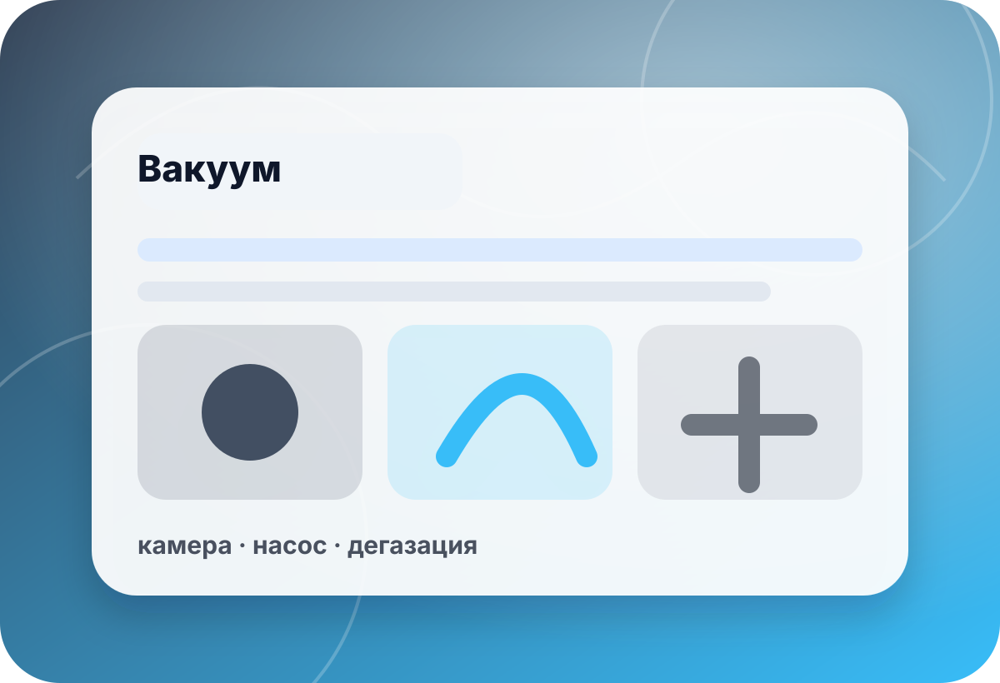

вакуум · аренда оборудования
Аренда вакуумного оборудования под материал и объём
Для разовой дегазации силикона, смолы, пластика или тестовой партии важно подобрать камеру, насос, тару и безопасный режим. В preview не публикуем неподтверждённые цены, наличие, сроки аренды и технические обещания.
- материал
- смесь
- объём
- тара
- режим
- вакуум
- цель
- тест

быстрый выбор
Сначала проверьте материал, объём и место работы
Аренда имеет смысл, когда понятны объём замеса, высота тары, склонность материала к подъёму пены и требования к подключению оборудования.
Нужен выбор оборудованияСравните камеры, насосы и вакуумные решения в общей категории.К вакуумному разделу →Важен насосПроизводительность и совместимость насоса влияют на скорость и стабильность процесса.К насосам →Нужны комплектующиеШланги, уплотнения и соединения лучше проверить до запуска процесса.К комплектующим →
связанные разделы
Что учесть для аренды
Ссылки ведут на существующие страницы. Конкретная доступность, комплектация и условия подтверждаются отдельно.
▣
Вакуумные камеры
Основной раздел для выбора камеры под объём, тару и материал.
- объём
- габарит
- крышка
Камеры с насосом
Готовые комплекты для дегазации, если нужен полный рабочий набор.
- камера
- насос
- подключение
Вакуумные насосы
Помогают подобрать скорость откачки и совместимость с задачей.
- производительность
- масло
- режим
Комплектующие
Шланги, фитинги и уплотнения должны соответствовать выбранной схеме.
- шланг
- уплотнение
- соединение
Силиконы и материалы
Материал определяет вспенивание, время работы и требования к дегазации.
- вязкость
- объём
- время
Подбор аренды
Опишите смесь, объём и место работы — поможем выбрать безопасный сценарий.
- задача
- объём
- место
чек-лист
Что уточнить до аренды
Материал и вспенивание
Силиконы, смолы и пластики по-разному поднимаются в вакууме и требуют запаса по таре.
Уточнить:материал · вязкость · время жизни · подъёмОбъём и тара
Важны не только литры смеси, но и высота, диаметр и свободный запас ёмкости.
Уточнить:объём · высота · диаметр · запасМесто работы
Проверьте питание, поверхность, вентиляцию, шум и безопасное размещение оборудования.
Уточнить:питание · стол · доступ · безопасностьКомплектация
До запуска нужно подтвердить камеру, насос, шланги, масло и необходимые переходники.
Уточнить:камера · насос · шланги · расходникимини-бриф
Опишите материал и объём — подберём сценарий аренды
Форма в preview не отправляет данные на сервер. Для реального запуска подключается CRM/почта/мессенджер после согласования.